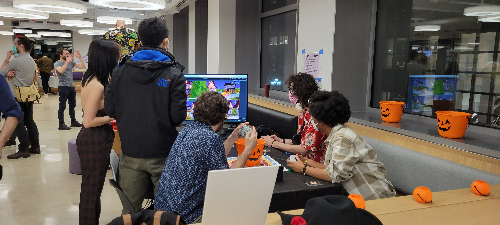
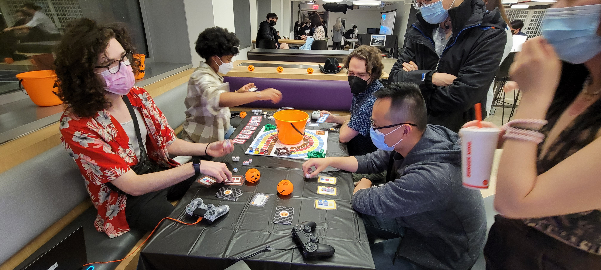

Trick or Trade
Party Game with Digital & Analog Parts
Game Designer | Lead Developer
Developed with Unity
Showcased at NYU Game Center Showcase 2022
[Require 4 Controllers to Play]
Trick or Trade is about knocking on doors asking for candies during Halloween when people were kids. It has a digital part, where four players use controllers to move around on a map, get as many candies as they can, and cache them into candy bank within time limit. Players can sabotage each other by bumping into other players or jumping on top of them. The placement of the digital part will result in different scoops of candy cubes one can get in the analog part.
The analog part is about rapid trading and completing combinations. Players can trade with whoever they want, however they want to complete their own combinations. There are also action cards mixed in each player's deck, when someone draws them, they can perform the action written on the cards to steal one candy cube from another player. There are also brocoli cubes that count as -1 point, but if one can get three brocoli cubes they can get an extra scoop from the bucket. In the end they mark their scores on the board and put in their placement into the digital game, which will affect their following digital phase.
A full round contains 3 digital part & 3 analog part, and in the end the winner is decided by their accumulated scores from the analog part.


